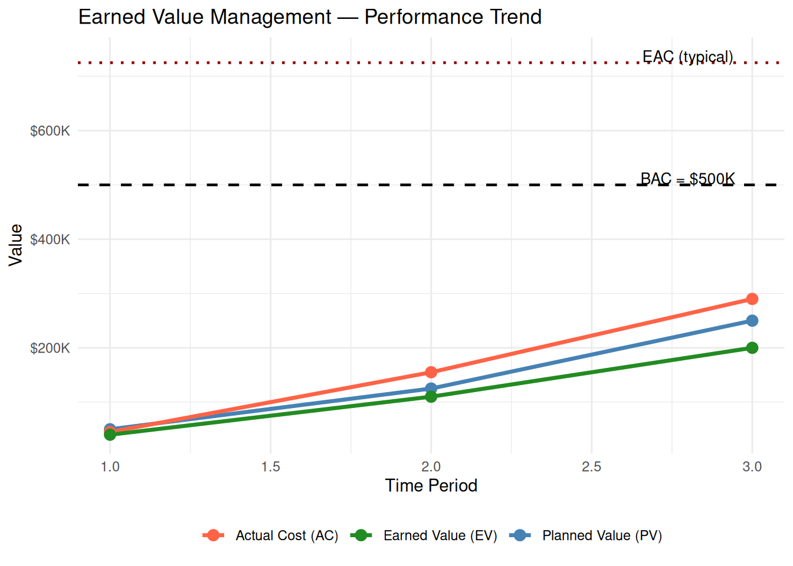

library(PRA)5 Show Me the Money: Earned Value Management
“It’s not about the budget you planned. It’s about the value you earned.”
Imagine you’re three months into a six-month project and you’ve spent exactly half the budget. Great news, right? Not so fast. The real question is: how much work did you actually get done? If you’ve only completed 30% of the project, you’ve got a serious problem. If you’ve completed 55%, you’re ahead of the game.
This is the fundamental insight behind Earned Value Management (EVM): you can’t judge project health by money spent alone. You need to compare three things — what you planned, what you actually did, and what it cost you to do it.
5.1 The Three Numbers That Rule Them All
NotePV, EV, AC — The Foundation of Everything
| Quantity | What it measures |
|---|---|
| PV — Planned Value | The budget authorized for work scheduled through today |
| EV — Earned Value | The budget value of work actually completed |
| AC — Actual Cost | Total cost incurred to date |
Every EVM metric — variance, index, or forecast — derives from these three numbers. If you know PV, EV, and AC, you know everything EVM can tell you.
EVM integrates scope, schedule, and cost into three core quantities (Fleming and Koppelman 2010):
| Quantity | What it measures |
|---|---|
| PV — Planned Value | The budget authorized for work scheduled through today |
| EV — Earned Value | The budget value of work actually completed |
| AC — Actual Cost | Total cost incurred to date |
From these three numbers, all the other EVM metrics flow. Every performance index, every forecast, every variance — it all comes back to PV, EV, and AC.
5.2 Key Metrics
| Metric | Formula | Interpretation |
|---|---|---|
| CV — Cost Variance | EV − AC | > 0: under budget; < 0: over budget |
| SV — Schedule Variance | EV − PV | > 0: ahead of schedule; < 0: behind schedule |
| CPI — Cost Performance Index | EV / AC | > 1: efficient; = 1: on target; < 1: over-spending |
| SPI — Schedule Performance Index | EV / PV | > 1: ahead; = 1: on target; < 1: behind |
| EAC — Estimate at Completion | See below | Forecast of total project cost |
| ETC — Estimate to Complete | EAC − AC | Remaining cost to finish the project |
| VAC — Variance at Completion | BAC − EAC | Expected surplus (positive) or overrun (negative) |
| TCPI — To-Complete Performance Index | (BAC−EV) / (BAC−AC) | Efficiency required on remaining work |
5.3 Example Setup
We will track a project with a total budget of $500,000 over a 5-period schedule.
bac <- 500000
schedule <- c(0.10, 0.25, 0.50, 0.75, 1.00)
time_period <- 35.3.1 Planned Value (PV)
PV is the authorized budget for work planned through the current period.
pv_val <- pv(bac, schedule, time_period)
cat("Planned Value (PV): $", format(pv_val, big.mark = ","), "\n")Planned Value (PV): $ 250,000 The project was planned to be 50% complete by period 3, so PV = $250,000.
5.3.2 Earned Value (EV)
EV reflects the budget value of work actually completed.
actual_per_complete <- 0.40
ev_val <- ev(bac, actual_per_complete)
cat("Earned Value (EV): $", format(ev_val, big.mark = ","), "\n")Earned Value (EV): $ 2e+05 Only 40% of work is done despite 50% being planned — we are behind schedule.
5.3.3 Actual Cost (AC)
AC is the cumulative cost incurred through period 3.
period_costs <- c(45000, 110000, 135000)
ac_val <- ac(period_costs, time_period, cumulative = FALSE)
cat("Actual Cost (AC): $", format(ac_val, big.mark = ","), "\n")Actual Cost (AC): $ 290,000 5.3.4 Performance Indicators
sv_val <- sv(ev_val, pv_val)
cv_val <- cv(ev_val, ac_val)
spi_val <- spi(ev_val, pv_val)
cpi_val <- cpi(ev_val, ac_val)
cat("Schedule Variance (SV): $", format(sv_val, big.mark = ","), "\n")Schedule Variance (SV): $ -50,000 cat("Cost Variance (CV): $", format(cv_val, big.mark = ","), "\n")Cost Variance (CV): $ -90,000 cat("Schedule Performance Index (SPI):", round(spi_val, 3), "\n")Schedule Performance Index (SPI): 0.8 cat("Cost Performance Index (CPI): ", round(cpi_val, 3), "\n")Cost Performance Index (CPI): 0.69 Interpretation: SPI < 1 means we are behind schedule — we’re only earning 80 cents of planned value per dollar of schedule. CPI < 1 means we are over budget — earning only 69 cents of value per dollar spent. Both are below 1.0: this project is in trouble.
5.4 Forecasting: Estimate at Completion (EAC)
EAC forecasts the total cost at project completion. Three methods are available, each making a different assumption about future performance:
| Method | Formula | When to use |
|---|---|---|
| Typical | BAC / CPI | Current cost inefficiency is expected to continue |
| Atypical | AC + (BAC − EV) | Cost overrun was a one-time event; future work at planned rate |
| Combined | AC + (BAC − EV) / (CPI × SPI) | Both cost and schedule performance will influence future costs |
eac_typical <- eac(bac, method = "typical", cpi = cpi_val)
eac_atypical <- eac(bac, method = "atypical", ac = ac_val, ev = ev_val)
eac_combined <- eac(bac,
method = "combined", cpi = cpi_val, ac = ac_val,
ev = ev_val, spi = spi_val
)
cat("EAC (typical): $", format(round(eac_typical), big.mark = ","), "\n")EAC (typical): $ 725,000 cat("EAC (atypical): $", format(round(eac_atypical), big.mark = ","), "\n")EAC (atypical): $ 590,000 cat("EAC (combined): $", format(round(eac_combined), big.mark = ","), "\n")EAC (combined): $ 833,750 The typical method gives the most conservative (highest cost) estimate because it assumes the current CPI persists. The atypical method is the most optimistic.
5.4.1 EAC Comparison Table
eac_table <- data.frame(
Method = c("Typical", "Atypical", "Combined"),
EAC = c(round(eac_typical), round(eac_atypical), round(eac_combined)),
Overrun = c(
round(eac_typical - bac),
round(eac_atypical - bac),
round(eac_combined - bac)
),
Assumption = c(
"Current CPI continues",
"Future work at planned rate",
"CPI and SPI both factor in"
)
)
knitr::kable(eac_table,
format.args = list(big.mark = ","),
caption = "EAC Comparison by Method"
)| Method | EAC | Overrun | Assumption |
|---|---|---|---|
| Typical | 725,000 | 225,000 | Current CPI continues |
| Atypical | 590,000 | 90,000 | Future work at planned rate |
| Combined | 833,750 | 333,750 | CPI and SPI both factor in |
5.5 Additional Metrics
etc_val <- etc(bac, ev_val, cpi_val)
vac_val <- vac(bac, eac_typical)
tcpi_bac <- tcpi(bac, ev_val, ac_val, target = "bac")
tcpi_eac <- tcpi(bac, ev_val, ac_val, target = "eac", eac = eac_typical)
cat("Estimate to Complete (ETC): $", format(round(etc_val), big.mark = ","), "\n")Estimate to Complete (ETC): $ 435,000 cat("Variance at Completion (VAC): $", format(round(vac_val), big.mark = ","), "\n")Variance at Completion (VAC): $ -225,000 cat("TCPI (to meet BAC): ", round(tcpi_bac, 3), "\n")TCPI (to meet BAC): 1.429 cat("TCPI (to meet EAC): ", round(tcpi_eac, 3), "\n")TCPI (to meet EAC): 0.69 Interpretation: TCPI > 1 means the team must work more efficiently than they have been to meet the target. A TCPI above 1.2 is generally considered unrealistic — if you need to be 30% more efficient for the rest of the project, it probably isn’t going to happen. Using the EAC target gives a more realistic benchmark.
5.6 Performance Trend Chart
The chart below shows cumulative PV, AC, and EV over time, with reference lines for BAC and EAC.
time_periods <- c(1, 2, 3)
actual_pct <- c(0.08, 0.22, 0.40)
p_costs <- c(45000, 110000, 135000)
pv_vals <- sapply(time_periods, function(t) pv(bac, schedule, t))
ac_vals <- cumsum(p_costs)
ev_vals <- sapply(actual_pct, function(a) ev(bac, a))
trend_data <- data.frame(
Period = time_periods,
PV = pv_vals, AC = ac_vals, EV = ev_vals
)
p <- ggplot2::ggplot(trend_data, ggplot2::aes(x = Period)) +
ggplot2::geom_line(ggplot2::aes(y = PV, color = "Planned Value (PV)"), linewidth = 1.2) +
ggplot2::geom_line(ggplot2::aes(y = AC, color = "Actual Cost (AC)"), linewidth = 1.2) +
ggplot2::geom_line(ggplot2::aes(y = EV, color = "Earned Value (EV)"), linewidth = 1.2) +
ggplot2::geom_point(ggplot2::aes(y = PV, color = "Planned Value (PV)"), size = 3) +
ggplot2::geom_point(ggplot2::aes(y = AC, color = "Actual Cost (AC)"), size = 3) +
ggplot2::geom_point(ggplot2::aes(y = EV, color = "Earned Value (EV)"), size = 3) +
ggplot2::geom_hline(yintercept = bac, linetype = "dashed", color = "black", linewidth = 0.8) +
ggplot2::geom_hline(yintercept = eac_typical, linetype = "dotted", color = "darkred", linewidth = 0.8) +
ggplot2::annotate("text", x = 2.8, y = bac + 12000, label = "BAC = $500K", size = 3.5) +
ggplot2::annotate("text", x = 2.8, y = eac_typical + 12000, label = "EAC (typical)", size = 3.5) +
ggplot2::scale_color_manual(values = c(
"Planned Value (PV)" = "steelblue",
"Actual Cost (AC)" = "tomato",
"Earned Value (EV)" = "forestgreen"
)) +
ggplot2::scale_y_continuous(labels = scales::label_dollar(scale = 1e-3, suffix = "K")) +
ggplot2::labs(
title = "Earned Value Management — Performance Trend",
x = "Time Period", y = "Value", color = NULL
) +
ggplot2::theme_minimal() +
ggplot2::theme(legend.position = "bottom")
print(p)
Reading the chart: The gap between PV and EV shows the schedule gap — EV is below PV, so we’re behind. The gap between AC and EV shows the cost overrun — we’ve spent more than the value we’ve earned.
5.7 Summary
EVM tells you where the project stands right now. For forward-looking updates that incorporate new information as the project evolves, Bayesian methods in Chapter 6 provide a complementary approach to cost forecasting.
5.8 Exercises
Diagnosis. If SPI < 1 and CPI > 1, what does that tell you about the project? Describe the scenario in plain English and give an example of how this might happen on a real project.
Forecast comparison. Compute EAC using all three methods for a new project with BAC = $200K, PV = $80K, EV = $60K, AC = $70K. Which method produces the highest estimate? The lowest? Which would you recommend reporting to the client?
TCPI reality check. For the same project (BAC = $200K, PV = $80K, EV = $60K, AC = $70K), calculate TCPI to meet BAC. Is it realistic? At what TCPI would you advise the client to revise the budget rather than try to recover?
The optimistic mistake. A project manager always uses the atypical EAC method, regardless of what’s happening. In what circumstances would this be dangerously wrong? Write a 2–3 sentence warning label for the atypical method.
Build your own trend. ★ Create a 5-period EVM dataset where the project starts over budget but recovers over time (CPI < 1 in periods 1–2, CPI ≥ 1 in periods 3–5). Plot the trend chart. Does the “typical” EAC improve as the project recovers?